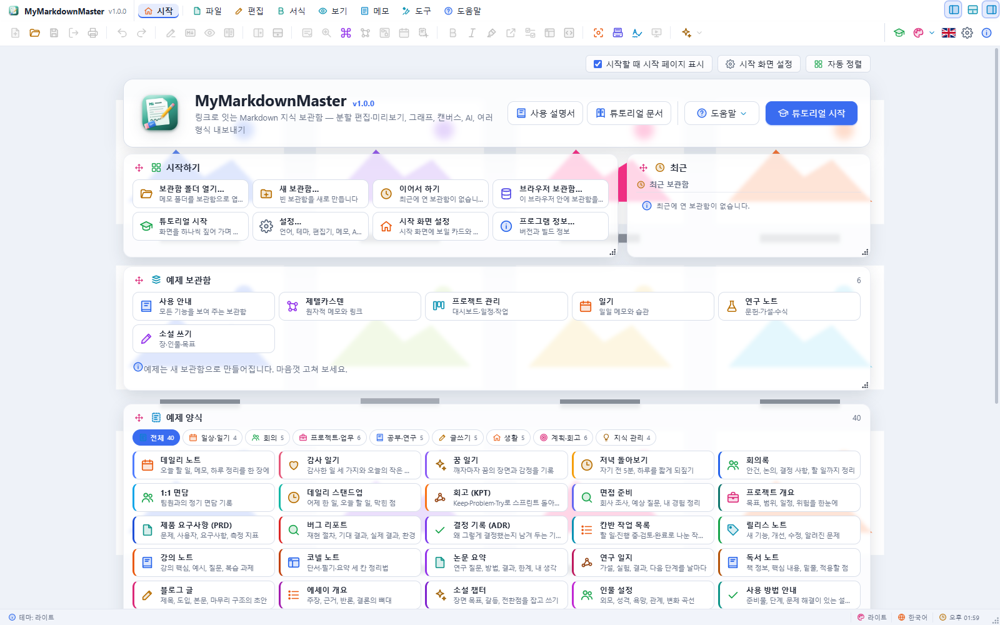
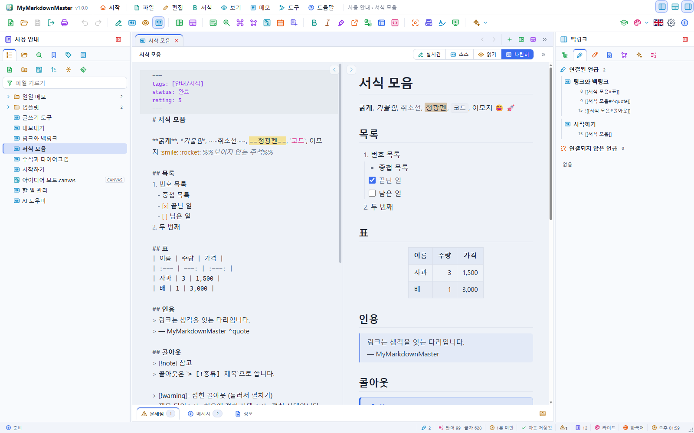
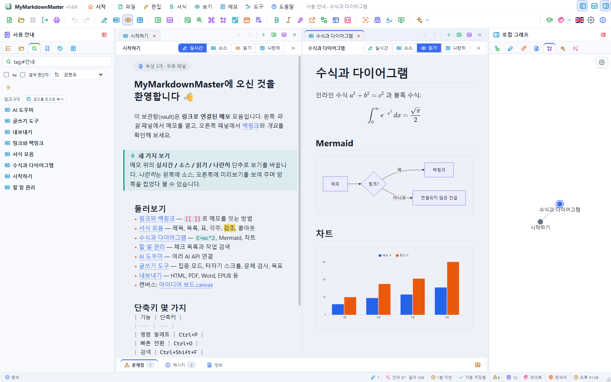
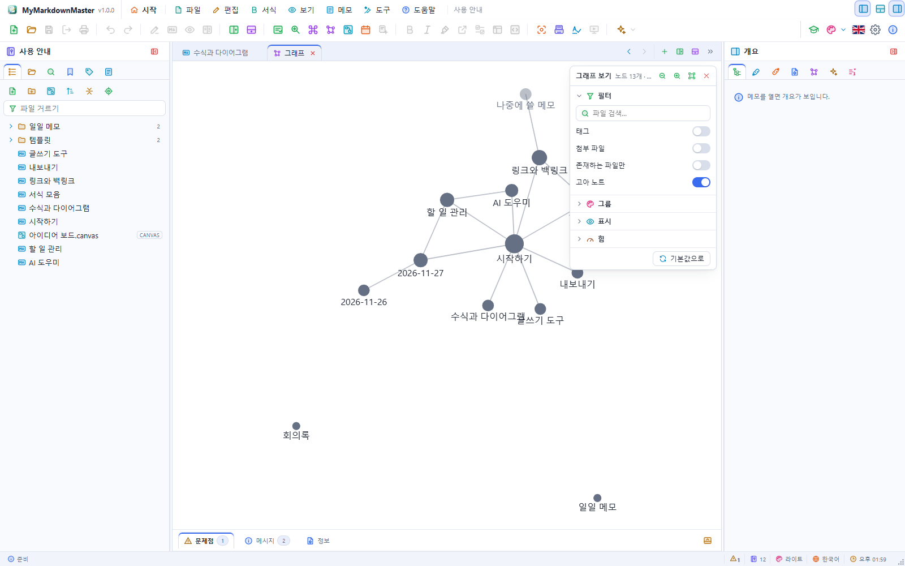
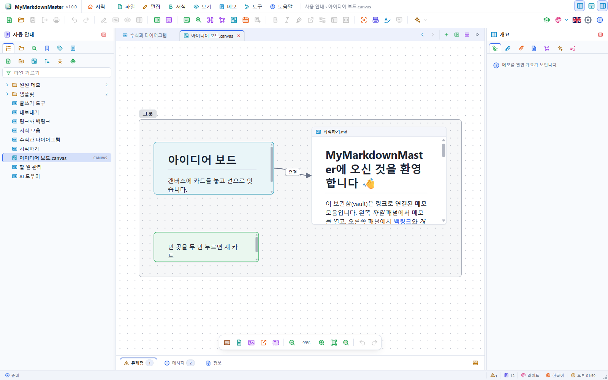
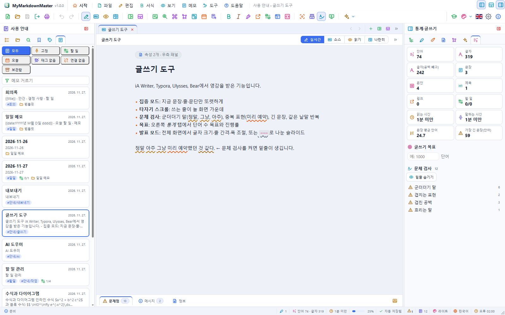
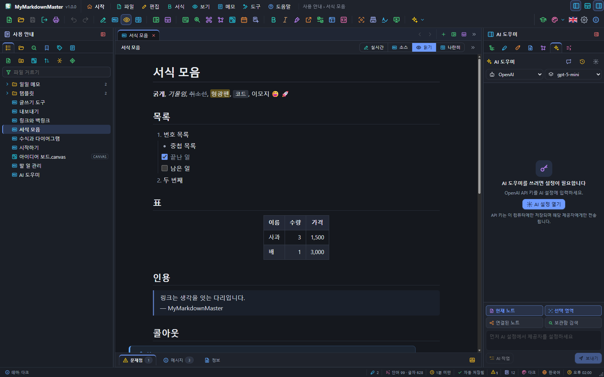
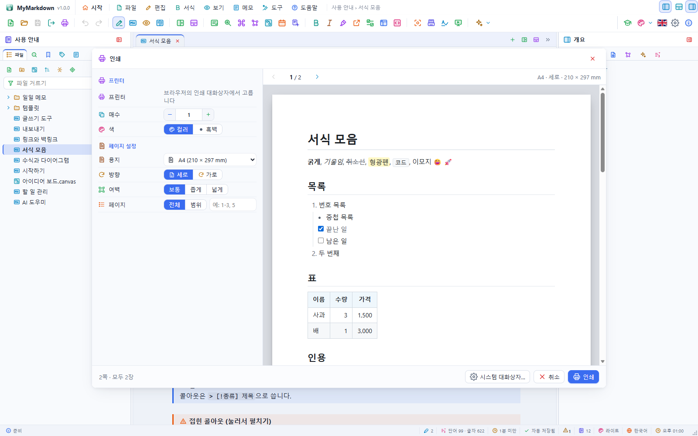

MyMarkdownMaster — 사용 설명서
MyMarkdownMaster 1.0.0은 폴더 하나를 보관함(vault) 으로 삼아 그 안의 Markdown 메모를 [[링크]]로 잇고, 백링크·그래프·캔버스·검색으로 둘러보며, 분할 편집과 미리보기로 쓰는 프로그램입니다. Windows, macOS, Linux 데스크톱 앱과 웹 앱이 같은 기능을 가집니다. 핵심(메모 해석, 링크, 검색, 렌더링, 내보내기)은 Rust로 만들어 데스크톱에서는 네이티브로, 웹에서는 WebAssembly로 돌아갑니다.

1. 화면 구성
| 부분 | 하는 일 |
|---|---|
| 메뉴 막대 | 시작 · 파일 · 편집 · 서식 · 보기 · 메모 · 도구 · 도움말, 오른쪽 끝에 패널 단추와 창 단추. 시작은 시작 화면과 메인 창을 오가는 토글입니다 |
| 툴바 | 자주 쓰는 명령(아이콘). 창의 최소 폭이 툴바 전체 폭이라 창을 줄여도 단추가 가려지지 않습니다 |
| 왼쪽 패널 | 파일 · 탐색기 · 검색 · 책갈피 · 태그 · 메모 목록. 단추는 모두 같은 크기로 세로 줄이 맞습니다. ‹ 단추로 접으면 아이콘 줄만 남습니다 |
| 가운데 | 작업 공간: 창을 가로·세로로 나누고 탭을 둡니다 |
| 오른쪽 패널 | 개요 · 백링크 · 나가는 링크 · 속성 · 로컬 그래프 · AI 도우미 · 통계와 글쓰기 |
| 아래 패널 | 문제(아직 없는 메모로 가는 링크, 속성 오류, 문체 검사) · 메시지 · 정보. 오른쪽 ⌄ ⌃ 단추(Ctrl+J)로 머리줄만 남기고 접었다 폅니다 |
| 상태 표시줄 | 백링크 수, 단어·글자, 읽는 시간, 목표 진행률, 줄·칸, 저장 상태, 문제 수, 테마, 언어, 시계 |
모든 패널은 접었다 펼 수 있고, 경계선을 끌어 폭과 높이를 바꿉니다. 보기 메뉴에서 왼쪽·오른쪽·아래 패널을 켜고 끄며 각 패널의 탭을 고릅니다. 메모가 하나도 없을 때 가운데에는 프로그램 아이콘·이름과 자주 쓰는 단추가 보입니다.
탐색기와 즐겨찾기
왼쪽 패널의 탐색기 탭은 컴퓨터의 폴더를 보여 줍니다(데스크톱 앱).
- 즐겨찾기: 폴더나 메모를 오른쪽 클릭 › 즐겨찾기에 추가로 모아 둡니다. 파일 목록과 탐색기의 오른쪽 클릭 메뉴 모두에 있습니다.
- 사용자 홈: 홈 폴더와 바탕 화면 · 문서 · 다운로드 · 사진.
- 드라이브: Windows는 C: D: …, macOS·Linux는 / 와 연결된 볼륨.
- 폴더를 누르면 펼쳐지고, 두 번 누르거나 오른쪽 클릭 › 보관함으로 열기로 보관함이 됩니다. 메모를 누르면 열립니다(다른 폴더의 메모는 그 폴더를 보관함으로 엽니다).
- 위 단추: 새로 고침, 모든 파일 보기(끄면 메모·그림·폴더만), 숨김 파일 보기, 모두 접기.
- 웹에서는 컴퓨터의 폴더를 볼 수 없어 열린 보관함의 즐겨찾기만 보입니다.
2. 보관함
- 보관함 폴더 열기 (Ctrl+Shift+O): 메모가 든 폴더를 엽니다. Obsidian 보관함도 그대로 열립니다.
- 새 보관함: 이름을 정하고 위치를 고르면 시작 메모가 든 새 폴더를 만듭니다.
- 예제 보관함: 시작 화면의 예제(사용 안내·제텔카스텐·프로젝트·일기·연구·소설)는 새 보관함으로 만들어지므로 마음껏 고쳐도 됩니다.
- 웹에서: Chrome·Edge는 실제 폴더를 열 수 있고, 모든 최신 브라우저는 *브라우저 보관함*(브라우저 안의 저장소)을 쓸 수 있습니다.
- 다른 프로그램이 파일을 바꾸면(동기화 도구 등) 데스크톱 앱이 감지해 화면을 고칩니다.
- 점(.)으로 시작하는 폴더(.git, .obsidian, .trash)는 보이지 않습니다.
3. 메모 보기 — 실시간 · 소스 · 읽기 · 나란히
메모 위의 단추나 Ctrl+1 / 2 / 3 / 4로 바꿉니다(Ctrl+E는 편집과 읽기 사이를 오갑니다).
| 보기 | 설명 |
|---|---|
| 실시간 | 서식을 보면서 씁니다. 커서가 있는 줄만 Markdown 기호가 드러납니다 |
| 소스 | Markdown 원문 그대로 |
| 읽기 | 다 만든 모습. 수식·다이어그램·차트·콜아웃·체크 상자가 동작합니다 |
| 나란히 | 왼쪽 원문, 오른쪽 미리보기. 스크롤이 맞춰집니다 |
나란히 보기에서는 가운데 선을 끌어 폭을 바꾸고(두 번 누르면 반반), 각 쪽 위의 ‹ › 단추로 한쪽을 접었다가 세로 띠를 눌러 다시 펼칩니다.

창 나누기와 탭
- 오른쪽으로 나누기 (Ctrl+\\), 아래로 나누기 (Ctrl+Shift+\\).
- 탭을 끌어 다른 창의 탭 줄에 놓거나, 창의 가장자리(왼·오른·위·아래)에 놓으면 새 창으로 나뉩니다.
- 탭 줄 오른쪽의 ‹ › 단추로 이전·다음 탭으로 옮깁니다(Ctrl+Tab / Ctrl+Shift+Tab). 탭이 많으면 고른 탭이 보이도록 줄이 움직입니다.
- 탭 고정, 다른 탭 닫기, 뒤로·앞으로(Alt+←/→).
- 작업 공간: 지금 배치를 이름을 붙여 저장하고 다시 불러옵니다. 마지막 배치는 보관함마다 기억됩니다.

4. 쓰기
[[를 치면 메모 이름이 자동 완성됩니다.[[메모#제목]],[[메모#^블록]],[[메모|보일 글]].![[메모]]는 다른 메모(또는 그 제목 아래)를 끼워 넣고,![[그림.png|300]]은 그림을 폭 300으로 보입니다.#태그,#부모/자식중첩 태그.- 콜아웃:
> [!note] 제목,> [!warning]- 접힌 콜아웃. ==형광펜==,%%보이지 않는 주석%%, 각주[^1], 수식$…$·$$…$$, Mermaid · 차트(``chart) 코드 블록,[TOC]목차,:smile:` 이모지.- 줄 맨 앞에서
/를 치면 빠른 넣기 메뉴(제목, 할 일, 표, 콜아웃, 수식, 다이어그램, 템플릿 …). - 그림을 붙여넣거나 끌어 놓으면 첨부 폴더에 저장되고 놓은 자리에 링크가 들어갑니다. 웹 페이지의 그림을 끌어 놓으면
- 그림 크기와 위치(실시간 보기): 그림 위에 마우스를 올리면 도구 줄(25% · 50% · 100% · 원래 크기, 왼쪽 · 가운데 · 오른쪽)과 오른쪽 아래 모서리 손잡이가 나옵니다. 손잡이를 끌면 폭이 바뀌고, 그림 자체를 끌면 메모의 다른 자리로 옮겨집니다. 원문에는
![[그림.png|center|300]]처럼 적히며 읽기 보기와 내보내기에도 같은 정렬이 쓰입니다(왼쪽·오른쪽은 글이 둘러쌉니다). 모두 Ctrl+Z로 되돌릴 수 있습니다. - 접기: 제목·목록·코드 블록·콜아웃 왼쪽의 표시로 접고, 모두 접기/펴기(편집 › 접기).
- 자동 저장(설정 › 일반)과 파일 복구(메모 › 파일 복구): 일정 간격으로 스냅숏을 남겨 되돌릴 수 있습니다.
속성(YAML)
메모 맨 위 --- 사이의 속성은 오른쪽 패널의 속성 탭에서 보고 고칩니다(보기 › 속성). 문서 위에는 표가 따로 그려지지 않고, 실시간 보기에서는 속성 3개 · 우측 패널 한 줄로 접혀 있다가 그 줄로 커서를 옮기면 원문이 보입니다. 속성 탭은 이 메모의 속성과 보관함 전체 속성 목록을 보여 줍니다.
예제 양식(템플릿 40개)
시작 화면의 예제 양식 카드에 40개의 양식이 8가지 분류(일상·일기, 회의, 프로젝트·업무, 공부·연구, 글쓰기, 생활, 계획·회고, 지식 관리)로 있습니다. 누르면 열린 보관함에 그 이름의 새 메모가 날짜 등이 채워진 채 만들어집니다. 메모 › 템플릿 넣기 / 양식에서 새 메모에서도 보관함의 템플릿과 함께 고를 수 있습니다.
5. 찾기와 연결
- 빠른 전환 (Ctrl+O): 메모 이름으로 열기. Ctrl+Enter는 새 탭.
- 명령 팔레트 (Ctrl+P): 모든 명령을 이름으로.
- 검색 (Ctrl+Shift+F):
tag:#할일,path:폴더,file:이름,content:,line:( a b ),section:( ),block:( ),task:,task-todo:,task-done:,[속성:값],"구절",-빼기,a OR b,/정규식/,match-case:. - 백링크: 이 메모를 가리키는 메모와 *연결되지 않은 언급*. 언급은 단추 하나로 링크가 됩니다.
- 그래프 (Ctrl+G): 끌기·확대·필터·그룹 색·힘 조절, 오른쪽 패널의 로컬 그래프.
- 이름 바꾸기·옮기기: 모든 링크가 자동으로 고쳐집니다(설정 › 파일·링크).
- 메모 합치기·나누기: 다른 메모에 합치기, 선택한 글을 새 메모로(링크 또는 임베드를 남김).

6. 메모 기능
- 오늘의 메모 (Alt+D), 이전·다음 일일 메모. 폴더·날짜 형식·템플릿은 설정 › 메모·템플릿.
- 템플릿 (Alt+T):
{{title}},{{date}},{{time}},{{date:YYYY년 M월 D일 dddd}},{{yesterday}},{{tomorrow}}. - 고유 번호 메모(제텔카스텐), 아무 메모 열기, 책갈피, 고정, 보관 폴더로.
- 메모 목록(왼쪽): 발췌와 함께 최근 순, 필터(모두·고정·할 일·오늘·태그 없음·연결 없음·보관함).
- 캔버스: 카드·메모·그림·링크를 놓고 선으로 잇는 무한 보드(JSON Canvas). 빈 곳을 두 번 누르면 새 카드.
- 녹음: 녹음한 소리를 첨부 파일로 저장하고 메모에 넣습니다.

7. 글쓰기 도구
- 집중 모드 (F8): 지금 줄·문장·문단만 또렷하게.
- 타자기 스크롤 (F9): 쓰는 줄이 늘 화면 가운데.
- 문체 검사 (F7): 군더더기 말, 겹치는 표현, 상투적 표현, 흐리는 말, 수동태(영어), 긴 문장, 같은 낱말 반복, 겹친 공백. 한국어·영어.
- 품사 강조(영어): 부사·접속사에 색.
- 똑똑한 문장부호: 곧은 따옴표 → 둥근 따옴표,
--→ —,...→ …. - 글쓰기 목표: 단어 수 목표와 진행률(상태 표시줄, 통계 탭). 속성
goal: 1000도 목표가 됩니다. - 통계: 단어, 글자, 문장, 문단, 읽는 시간, 말하는 시간, 문장 평균 길이.
- 발표: 슬라이드(F5,
---로 나눈 장) · 읽기 발표(Shift+F5: 글자 크기·줄 간격·폭·대비 조절). - 읽기 테마: 프로그램 테마 따르기 · 기본 · 어둡게 · 크림 · 솔라라이즈드 · 고대비, 글꼴, 여백.

8. AI 도우미
설정 › AI에서 공급자를 고르고 API 키를 넣습니다: OpenAI, Anthropic(Claude), Google Gemini, Azure OpenAI, Mistral, Groq, DeepSeek, xAI, OpenRouter, Perplexity, Together, Ollama, LM Studio, 사용자 지정(OpenAI 호환). *연결 시험*과 *모델 불러오기* 단추가 있습니다.
- 오른쪽 AI 탭(Ctrl+Shift+A)에서 대화합니다. 지금 메모·선택한 글·연결된 메모·보관함 검색을 문맥으로 넣을 수 있습니다.
- 답은 커서 자리에 넣기, 선택 글 바꾸기, 메모 끝에 붙이기, 새 메모로 만들기.
- 툴바의 AI ▾ 메뉴와 편집기 오른쪽 클릭: 요약, 이어 쓰기, 다듬기, 맞춤법, 줄이기·늘리기, 어조, 번역(한↔영), 설명, 태그 만들기, 제목 제안, 개요, 표로, 아이디어, 할 일 뽑기 …
- 키는 이 컴퓨터(이 브라우저)에만 저장됩니다. 데스크톱 앱은 Rust 백엔드를 통해 요청하므로 브라우저의 CORS 제한이 없습니다.

9. 내보내기와 인쇄
파일 › 내보내기(툴바의 내보내기 단추)에서 형식을 고릅니다. Rust 코어가 만듭니다.
PDF · HTML(스타일 포함/없음) · Word(.docx) · OpenDocument(.odt) · EPUB · RTF · LaTeX · Markdown(링크·임베드 풀기) · 일반 텍스트 · Djot · reStructuredText · AsciiDoc · MediaWiki · Textile · OPML · Org · JSON.
- 설정 › 내보내기: 목차, 제목 번호, 그림 넣기, 용지.
- 다시 내보내기 (Ctrl+Alt+E), Markdown으로 복사.
- 웹에서는 파일이 내려받기로 저장되고, PDF는 인쇄 대화상자에서 "PDF로 저장"을 고릅니다.
인쇄 창
인쇄(Ctrl+Shift+P, 툴바의 프린터 단추, 파일 메뉴, 파일 목록·탭·빈 곳의 오른쪽 클릭 메뉴)는 별도의 인쇄 창을 엽니다. 왼쪽에서 고르고, 오른쪽에서 쪽으로 나뉜 모습을 바로 봅니다.
- 프린터: 설치된 프린터 목록(기본 프린터가 먼저), 매수, 컬러/흑백.
- 페이지 설정: 용지(A4·A3·A5·B5·Letter·Legal …), 방향(세로/가로), 여백(보통/좁게/넓게), 페이지(전체 또는
1-3, 5같은 범위). - 미리보기 위의 ‹ › 로 쪽을 넘기고, 아래에 전체 쪽수와 장수가 나옵니다.
- 인쇄 단추를 누르면 시스템 대화상자 없이 고른 프린터로 바로 출력됩니다(Windows 데스크톱). 다른 운영체제와 웹에서는 시스템 인쇄 대화상자가 열립니다. 시스템 대화상자… 로 언제든 시스템 창을 쓸 수 있습니다.

10. 설정
설정(Ctrl+,)은 왼쪽에 탭이 세로로 늘어선 창입니다(스크롤 없이 모든 항목이 보입니다). 탭: 일반 · 편집기 · 읽기 · 파일·링크 · 메모·템플릿 · 글쓰기 · 내보내기 · AI · 테마 · 글꼴 · 시작 화면 · 배경 · 최근 기록 · 단축키.
11. 단축키
| 단축키 | 기능 |
|---|---|
| Ctrl+N | 새 메모 |
| Ctrl+O | 빠른 전환 |
| Ctrl+P | 명령 팔레트 |
| Ctrl+Shift+O | 보관함 폴더 열기 |
| Ctrl+S / Ctrl+Alt+S | 저장 / 모두 저장 |
| Ctrl+Shift+F | 보관함 검색 |
| Ctrl+F / Ctrl+H | 찾기 / 찾아 바꾸기 |
| Ctrl+G | 그래프 보기 |
| Ctrl+1 / 2 / 3 / 4 | 실시간 / 소스 / 읽기 / 나란히 |
| Ctrl+E | 편집·읽기 전환 |
| Ctrl+\\ / Ctrl+Shift+\\ | 오른쪽 / 아래로 나누기 |
| Ctrl+W | 탭 닫기 |
| Alt+D / Alt+T | 오늘의 메모 / 템플릿 넣기 |
| Ctrl+B / Ctrl+I / Ctrl+K | 굵게 / 기울임 / 링크 |
| Ctrl+L | 할 일 |
| F2 | 이름 바꾸기 |
| F5 / Shift+F5 | 슬라이드 / 읽기 발표 |
| F7 / F8 / F9 | 문체 검사 / 집중 모드 / 타자기 스크롤 |
| F11 | 전체 화면 |
| Ctrl+Shift+A | AI 도우미 |
| Ctrl+J | 아래 패널 |
| Ctrl+Shift+1 / 2 | 왼쪽 / 오른쪽 패널 |
| Shift+F1 / F1 | 튜토리얼 / 프로그램 정보 |
12. 설치
- Windows: 설치 프로그램(NSIS). 이미 설치된 MyMarkdownMaster은 지우고 새로 설치합니다.
- macOS: DMG, Linux: deb · rpm · AppImage.
- 웹:
npm run build:web의dist/를 아무 정적 웹 서버에 올립니다. - 직접 만들기:
npm run build:win,build:mac,build:linux(Rust·Node 필요).